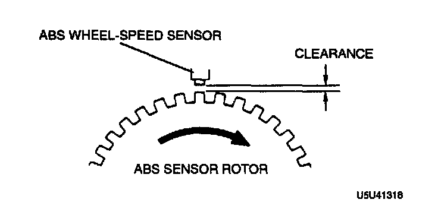

Front
CLEARANCE INSPECTION1. Remove the wheel and tire, and inspect the sensor for looseness and damage. Replace the sensor as necessary.

2. Verify the clearance between the ABS wheel-speed sensor and the sensor rotor.
Clearance: 0.3-1.1 mm (0.012-0.043 inch)
3. If not as specified, replace the ABS wheel-speed sensor or sensor rotor as necessary.
RESISTANCE INSPECTION
1. Disconnect the ABS wheel-speed sensor connector.

2. Inspect for resistance at the ABS wheel-speed sensor.
Resistance: 1.4-1.8 K ohms
VOLTAGE INSPECTION
1. On level ground, jack up the vehicle and support it evenly on safety stands.
2. Disconnect the ABS wheel-speed sensor connector.
3. Inspect each wheel by rotating it at one revolution per second.
Voltage: 0.25-1.2 V (AC)
4. If not as specified, replace the ABS wheel-speed sensor or sensor rotor as necessary.